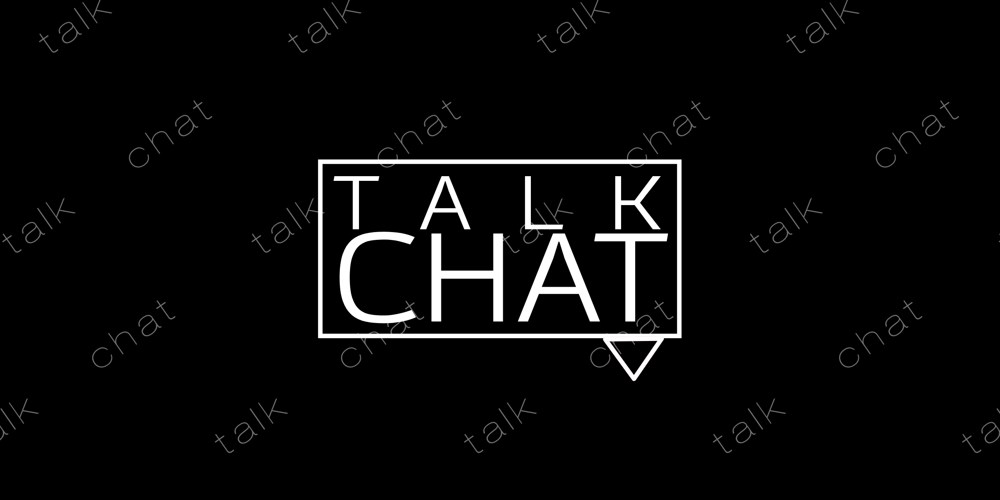
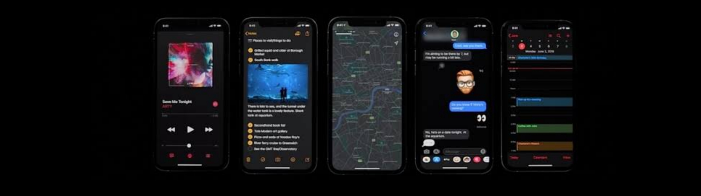

Login Rapido
Para fazer login no talk chat, só é necessario um email, senha e tag.
Assim como no discord.
Configurações
Sem exesso de configuraões e opções desnecessarias. Assim ficilitando o uso.
Assim como no WhatsApp
Chat e Interface
As conversas terão uma interface limpa e agradavel.
E seguindo a tendencia de temas escuros que muitos usam
